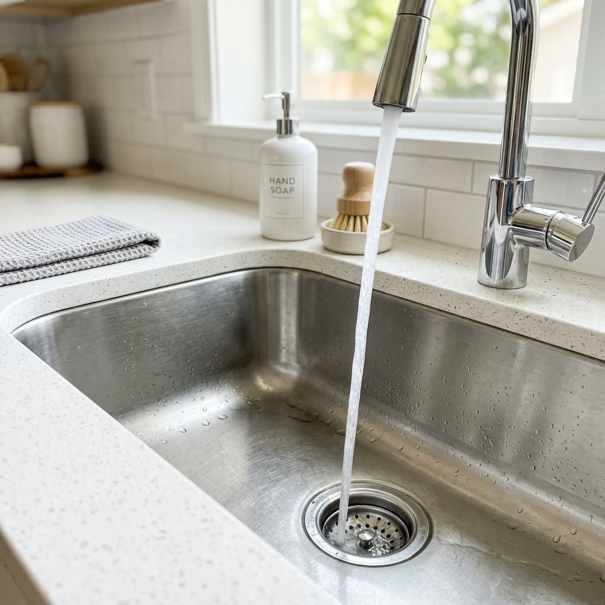
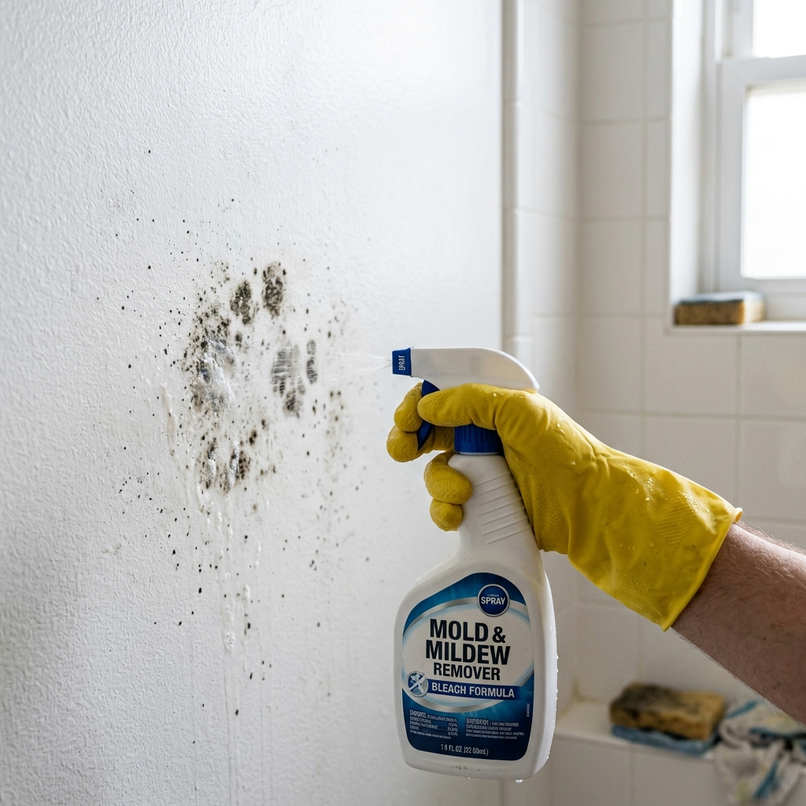
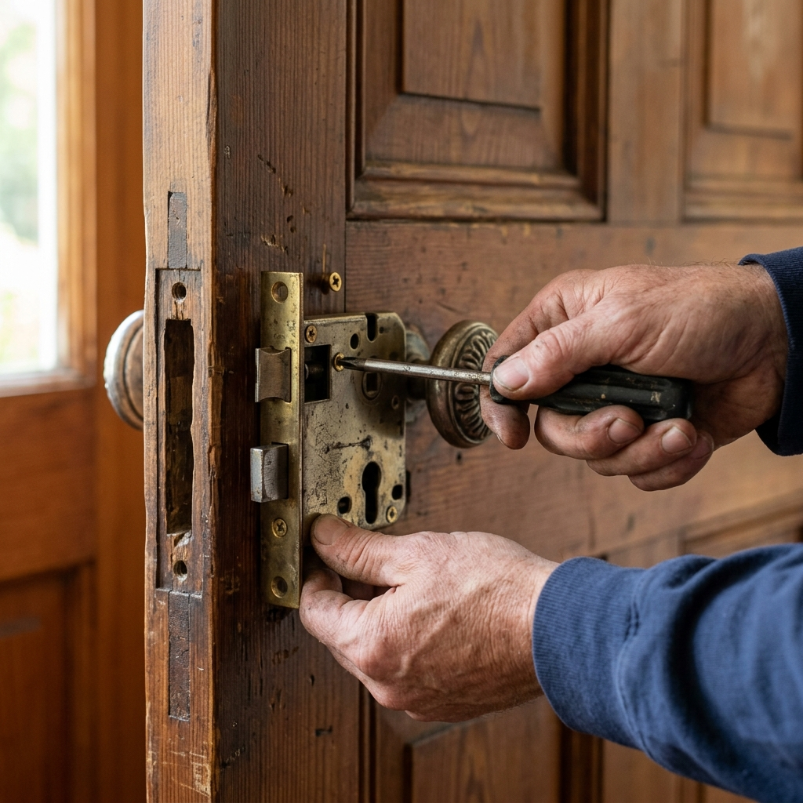

Como consertar descarga de vaso sanitário que não para de correr

Se você está buscando uma solução simples e prática para Consertar descarga, você está no lugar certo. Nosso guia detalhado foi preparado especialmente para leigos e iniciantes.
Índice
- 1. O que você precisa saber antes de começar
- 2. Ferramentas e materiais necessários
- 3. Passo a Passo
- 4. Dicas e Erros Comuns
- 5. Perguntas Frequentes
1. O que você precisa saber antes de começar
Aprender sobre Consertar descarga é essencial para manter a harmonia e o bom funcionamento da sua casa. Ao longo deste guia, você vai entender as melhores técnicas, quais ferramentas utilizar e como evitar erros comuns. Aprenda a consertar a descarga do vaso sanitário e economizar água.
Muitas pessoas gastam centenas de reais chamando profissionais para resolver problemas que poderiam ser facilmente solucionados com um pouco de paciência. Hoje, vamos desmistificar o processo para você.
2. Ferramentas e materiais necessários

Para concluir essa tarefa, você vai precisar dos seguintes itens:
- Equipamento de Proteção (Luvas, óculos se necessário)
- Pano limpo e seco
- Ferramentas básicas compatíveis com o conserto
3. Passo a Passo
Siga estas etapas detalhadas para garantir o sucesso do seu procedimento:
Passo 1: Preparação. Antes de iniciar, limpe a área e separe todas as ferramentas indicadas acima. A organização é a chave para o sucesso de qualquer reparo ou projeto doméstico.
Passo 2: Execução. Com cuidado, aplique a técnica recomendada para resolver a questão principal. Faça movimentos firmes e não tenha pressa. Se sentir resistência, pare e avalie a situação.
Passo 3: Finalização. Após concluir a etapa principal, limpe os resíduos e faça um teste prático. Certifique-se de que o problema foi resolvido permanentemente e que a estrutura está segura.
4. Dicas e Erros Comuns

| O que fazer | O que NÃO fazer |
|---|---|
| Seguir a ordem exata do passo a passo | Pular etapas achando que não são importantes |
| Usar as ferramentas adequadas | Improvisar ferramentas cortantes ou de torque |
Uma dica de ouro para quem está lidando com Consertar descarga pela primeira vez é não forçar as peças. Além disso, manter a manutenção em dia evita que o problema se repita no futuro.
Sempre guarde os manuais das suas ferramentas e anote os passos que você seguiu. Assim, da próxima vez, a tarefa será ainda mais rápida e fácil!
5. Perguntas Frequentes (FAQ)
Vale a pena tentar resolver sozinho?
Sim, seguindo os passos indicados com segurança, você economiza muito.
Quando devo chamar um profissional?
Se o problema envolver fiação estrutural da casa ou encanamentos rompidos na parede.